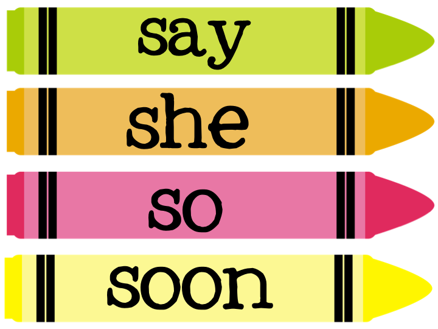
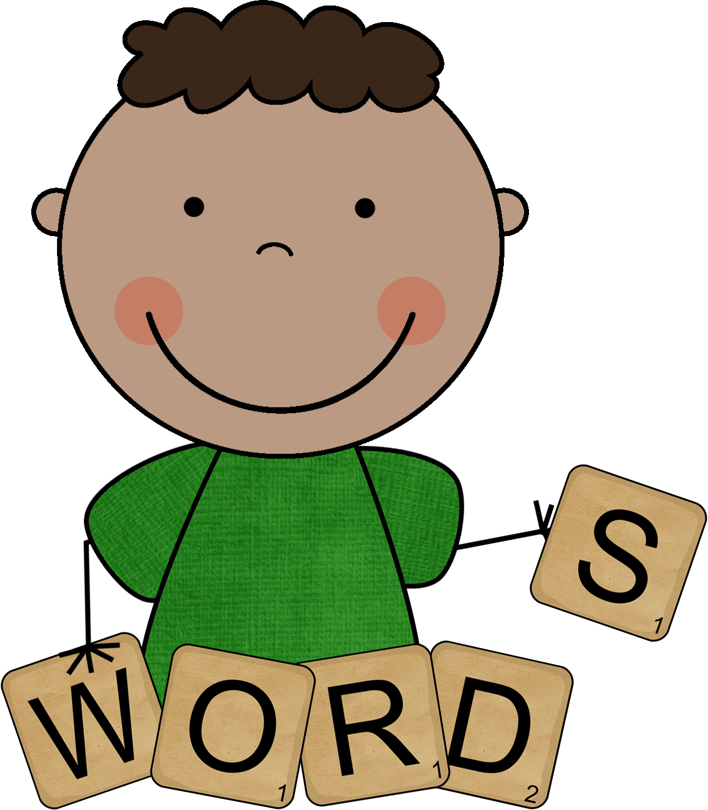

The Explore Task
Below is the infographic I made based on the computing innovation I researched: Intel's Optane Memory.

The Talking Simulator is a Scratch Project
Our goal was to make some sort of game on Scratch and my partner, Antonio, and I decided to make a satire of role-playing or dating games. We used an incremental and iterative design process to make it.
In MIT's app inventor, we designed an app that addresses this issue: Oftentimes when inputting a password for a keypad someone could be looking over your shoulder. Said person could bypass the security pad by memorizing the pattern in which you press the numbers. Our app randomizes the numbers that are displayed on a keypad so that in order to get through the security, you need to know the actual numbers or password instead of memorizing a pattern.
For this project I was paired up with my friend Andres Morales. Our task was to design, build, and simulate tic tac toe in Python 2.7.10. At first it was difficult and we couldn't comprehend how we were suppose to play tic tac toe when Python only operates to text and has no visuals, but then we found a way around it. We were able to print the board and then we made it possible so that a player could change the board. After figuring out how to change the board and such we decided to use a sort of counter to decide which player's turn it was. After that we set on the winning conditions. We figured there are three main possible ways to win: horizontally, vertically, and diagonally. After that it was finished. I think we did a pretty good job. It even has conditions for a tie or when a space is already taken. To think that it seemed unfeasible the first day and we created it to work perfectly fine and as it should be.
Mr. Engstrom had us pick and do research on a computer virus and I chose this one.
At one point we were tasked with exploring and experimenting with simulations. For the project we had to modify the simulation and code to simulate something else or add another factor. My partner, Alvin Lo, and I chose the AIDs simulation and decided simulate what would happen if there was a cure for AIDs. Our cure acts like a counter virus and shares some of the same traits as AIDs itself, basically it was a competition to see which virus was faster or stronger, but in this case one of the virsuses is the cure.
For the AP Test we had two online, digital assignments to submit other than the multiple choice test.
Below is the infographic I made based on the computing innovation I researched: Intel's Optane Memory.
The picture of the crayons is a download to link for my answers to the assignment.
For the create task I made an app for my coach. Of course he'll never use it and it doesn't work, but that's what it's inspired by. The app for running coaches to measure the distance of a run and share it to their athletes.
Click the majestic man below to download my answers to the Create Task.
